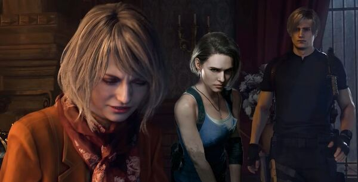

ULTIMOS JUEGOS
Descubre nuevos lanzamientos! Sitio diseñado para descubrir nuevo juegos y mantenerte al día con los más recientes lanzamientos, desde los juegos famosos hasta juegos indi que solo encontrarás en nuestro sitio. Podrás encontrar juegos para todas las plataformas incluyendo Android, iOS, Play Station PS, Xbox, Nintendo, Wii.
Resident Evil

